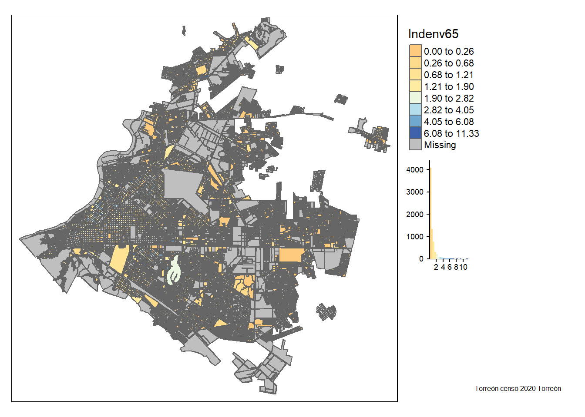

Capítulo 9 Indicador cartografiado por manzana
El siguiente texto ejemplifica la ejecución del código seleccionando la variable que se quiere estudiar
’— title: “Indicador cartografiado por manzana”
author: “Claudia Guerrero S”
date: “6/04/2021”
output: html_document: df_print: paged pdf_document: default
params:
’# Render Function: #
estilo: label: “Estilo” value: jenks input: select choices: [pretty,equal,quantile,sd,kmeans,jenks,fisher]
indicad: label: “Indicador” value: Indenv65 input: select choices: [Indenv65,Indenv60,Relapoyopot,Reladepdem65,Reldepdem60]
entidad: label: “Entidad Federativa” value: Coahuila de Zaragoza input: select choices: [Aguascalientes,Baja California,Baja California Sur,Campeche,Coahuila de Zaragoza,Colima,Chiapas,Chihuahua,Ciudad de México,Durango,Guanajuato,Guerrero,Hidalgo,Jalisco,México,Michoacán de Ocampo,Morelos,Nayarit,Nuevo León,Oaxaca,Puebla,Querétaro,Quintana Roo,San Luis Potosí,Sinaloa,Sonora,Tabasco,Tamaulipas,Tlaxcala,Veracruz de Ignacio de la Llave,Yucatán,Zacatecas]
municipio: label: “Municipio” value: “Torreón”
editor_options: markdown: wrap: 72 ’—
9.1 Importación de datos cartográficos
Censo de Población y Vivienda 2020 2020 2.65 GB https://inegi.org.mx/contenidos/productos//prod_serv/contenidos/espanol/bvinegi/productos/geografia/marcogeo/889463807469_s.zip Ficha de información https://inegi.org.mx/app/biblioteca/ficha.html?upc=889463807469
Se descarga y se descomprime localmente Se crea una carpeta para los datos geográficos
#La ruta para el mapa de México se toma del Marcogeostadístico nacional
rutam<-"D:/Documents/Claudia/Midropbox/Investigacion y escritos/Marcogeoestadisticonacional/mg_sep2019_integrado/conjunto_de_datos"
rutamc<-"D:/Documents/Claudia/Midropbox/Investigacion y escritos/Censo2020/"
geoentidades<-read.csv(paste0(rutamc,"marcogeoentidad.csv"),header=TRUE, sep=",",encoding="UTF-8")
municipios<-read.csv(paste0(rutamc,"municipios.csv"),header=TRUE, sep=",",encoding="latin")
municipios <-subset(municipios,municipios$NOM_ENT %in% c(params$entidad))
municipios <-subset(municipios,municipios$NOM_MUN %in% c(params$municipio))
titulmun<-municipios$NOM_MUN
nummun<-municipios$MUN
rutamc<-"D:/Documents/Claudia/Midropbox/Investigacion y escritos/Censo2020/889463807469_s"
codent<-substr(geoentidades$NUM_ENT,1,2)
codent<-sprintf("%02d%s", as.numeric(gsub("[^0-9]+", "", codent)), gsub("[0-9]+", "", codent))
geoentidades$COD_ENT<-codent
geoentidades <-subset(geoentidades,geoentidades$NOM_ENT %in% c(params$entidad))
codent<-geoentidades$COD_ENT
rutamc<-"D:/Documents/Claudia/Midropbox/Investigacion y escritos/Censo2020/889463807469_s/"
filename<-geoentidades$ARCHENT
filemun<-paste0(geoentidades$COD_ENT,"mun")
fileloc<-paste0(geoentidades$COD_ENT,"a")
filemza<-paste0(geoentidades$COD_ENT,"m")
url<-paste0(rutamc,filename,".zip")
temp2 <- tempfile()
unzip(url, exdir = temp2)
rut<-file.path(temp2)
rutamun<-paste0(rut,"/conjunto_de_datos")
basemapamun <- readOGR(rutamun,filemun, use_iconv = TRUE, encoding = "latin1")## OGR data source with driver: ESRI Shapefile
## Source: "C:\Users\Claudia.Guerrero\AppData\Local\Temp\RtmpmWrTxw\file1d387a2b2354\conjunto_de_datos", layer: "05mun"
## with 38 features
## It has 4 fieldssnummun<-sprintf("%03d%s", as.numeric(gsub("[^0-9]+", "", nummun)), gsub("[0-9]+", "", nummun))
basemapamun<-subset(basemapamun,basemapamun$CVE_MUN %in% c(snummun))
basemapaloc <- readOGR(rutamun,fileloc, use_iconv = TRUE, encoding = "latin1")## OGR data source with driver: ESRI Shapefile
## Source: "C:\Users\Claudia.Guerrero\AppData\Local\Temp\RtmpmWrTxw\file1d387a2b2354\conjunto_de_datos", layer: "05a"
## with 1882 features
## It has 5 fieldsbasemapaloc<-subset(basemapaloc,basemapaloc$CVE_MUN %in% c(snummun))
basemapamza <- readOGR(rutamun,filemza, use_iconv = TRUE, encoding = "latin1")## OGR data source with driver: ESRI Shapefile
## Source: "C:\Users\Claudia.Guerrero\AppData\Local\Temp\RtmpmWrTxw\file1d387a2b2354\conjunto_de_datos", layer: "05m"
## with 75827 features
## It has 8 fieldsbasemapamza<-subset(basemapamza,basemapamza$CVE_MUN %in% c(snummun))
rutvar<-"D:/Documents/Claudia/Midropbox/Investigacion y escritos"
variablescensales<-read.csv(paste0(rutvar,"/Censo2020/","variablescensales.csv"),header=TRUE, sep=",",encoding="UTF-8")9.2 Importación de datos censales
En el sitio del INEGI se encuentran los resultados del CENSO 2020 para cada una de las entidades de la población https://www.inegi.org.mx/programas/ccpv/2020/default.html#Datos_abiertos
Principales resultados por AGEB y manzana urbana Ejemplo. Aguascalientes
Para recuperar los datos censales a nivel estatal:
En el archivo se registra la población total de la entidad cuando en el nombre de la localidad aparece la leyenda “Total de la Entidad”
codent<-geoentidades$COD_ENT
url<-paste0("https://www.inegi.org.mx/contenidos/programas/ccpv/2020/datosabiertos/ageb_manzana/ageb_mza_urbana_",codent,"_cpv2020_csv.zip")
temp <- tempfile()
temp2 <- tempfile()
download.file(url, temp)
unzip(zipfile = temp, exdir = temp2)
rut<-file.path(temp2)
filename<-paste0(rut,"/","ageb_mza_urbana_",codent,"_cpv2020","/","conjunto_de_datos","/","conjunto_de_datos_ageb_urbana_",codent,"_cpv2020.csv")
censonal<- read.csv(filename,header=TRUE, sep=",",encoding="UTF-8")
names(censonal)[1] <- "CVE_ENT"
#Datos de toda la entidad uso del campo nom_loc para identificar los valores de las variables a nivel estatal
censonal <-subset(censonal,censonal$NOM_ENT %in% c(params$entidad))
censonal <-subset(censonal,censonal$MUN %in% c(nummun))
`%notin%` <- Negate(`%in%`)
censonal <-censonal[censonal$AGEB %notin% c("0000"),]
codent<-substr(censonal$CVE_ENT,1,2)
codent<-sprintf("%02d%s", as.numeric(gsub("[^0-9]+", "", codent)), gsub("[0-9]+", "", codent))
codmun<-substr(censonal$MUN,1,3)
codmun<-sprintf("%03d%s", as.numeric(gsub("[^0-9]+", "", codmun)), gsub("[0-9]+", "", codmun))
codloc<-substr(censonal$LOC,1,4)
codloc<-sprintf("%04d%s", as.numeric(gsub("[^0-9]+", "", codloc)), gsub("[0-9]+", "", codloc))
codageb<-substr(censonal$AGEB,1,4)
codmza<-substr(censonal$MZA,1,3)
codmza<-sprintf("%03d%s", as.numeric(gsub("[^0-9]+", "", codmza)), gsub("[0-9]+", "", codmza))
censonal$CVEGEO<-paste0(codent,codmun,codloc,codageb,codmza)
# censonal <-subset(censonal,censonal$NOM_ENT %in% #c(params$entidad))
#Ahora el mapa tiene el dato de las 198 variables del censo
#Conversión a número
cols = c(11:229)
censonal[,cols] %<>% lapply(function(x) as.integer(as.character(x)))
#censonal$CVEGEO
censonal[,cols] %<>% lapply(function(x) x/censonal$POBTOT)
basemapa<-merge(basemapamza,censonal, by="CVEGEO", all.x =TRUE) La selección de la zona se realiza en el sitio del INEGI
En la opción de los Servicios y Espacio y datos de México https://www.inegi.org.mx/app/mapa/espacioydatos/#
Se utiliza la herramienta del polígono para seleccionar el área que se quiere estudiar y los distintos niveles de zoom son los que dan las capas disponibles.
Para la capa de las manzanas se requiere un zoom de 16 y se puede solicitar que el archivo se enviado a un correo electrónico.
El archivo en cuestión se descomprime en la máquina personal y desde ahí se lee el el que contiene la capa correspondiente
Una vez que se lee el mapa que ya habíamos creado con los valores cartográficos y censales para la entidad y municipio seleccionado en los parámetros, se obtiene de él el subconjunto espacial de la zona seleccionada, como un subconjunto de la matriz completa
rutaz<-"D:/Documents/Claudia/Midropbox/Investigacion y escritos/Censo2020/zona"
filez<-"INEGI_Manzanas_"
basemapaz <- readOGR(rutaz,filez, use_iconv = TRUE, encoding = "latin1")## OGR data source with driver: ESRI Shapefile
## Source: "D:\Documents\Claudia\Midropbox\Investigacion y escritos\Censo2020\zona", layer: "INEGI_Manzanas_"
## with 100 features
## It has 80 fieldsbasemapaz <- spTransform(basemapaz, CRS(proj4string(basemapa))) # transform CRS
#mapazon <- basemapa[basemapaz, ]
#basemapa<-mapazon9.3 Indicador en zona seleccionada
Torreón Índice de envejecimiento 65
POB65ymás/Pob0a14
El estilo fisher crea grupos con la máxima homogeneidad
